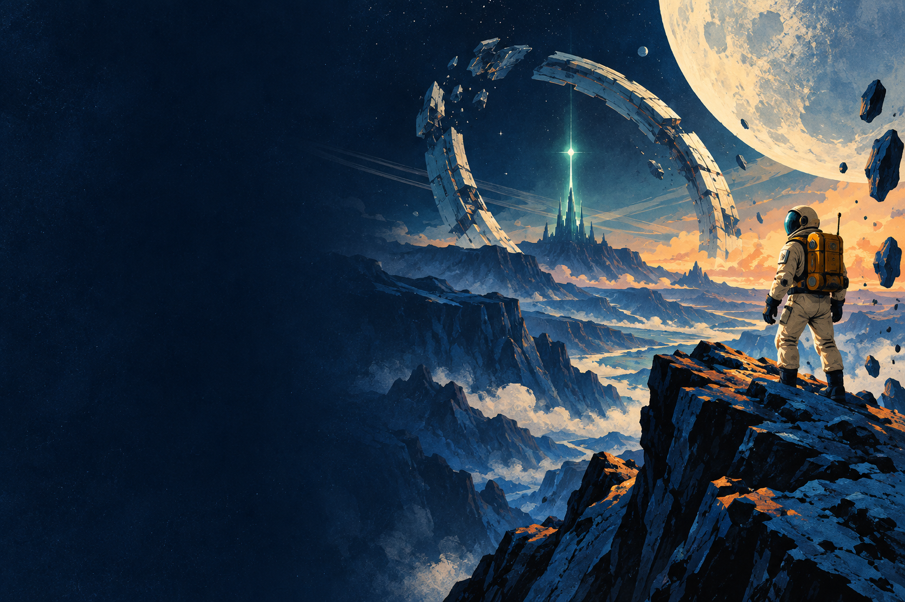

ОДИН ИССЛЕДОВАТЕЛЬ. ДЕСЯТЬ МАЯКОВ.
ОРБИТА
За следующим
горизонтом.
Найди Аду.
Верни связь с домом.
0 ИЗ 10 МАЯКОВ
10маршрутов экспедиции
Твой путьнеобязательные награды
Без сетився игра в одной папке
Миры за сигналом
Три характера пространства. Десять маршрутов.